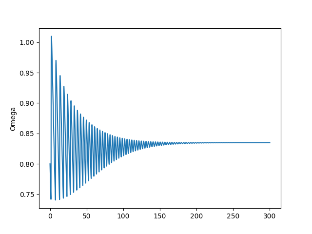
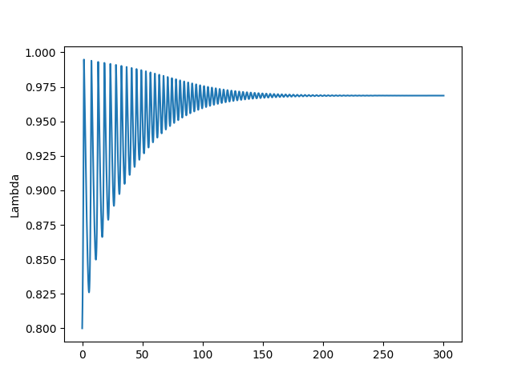
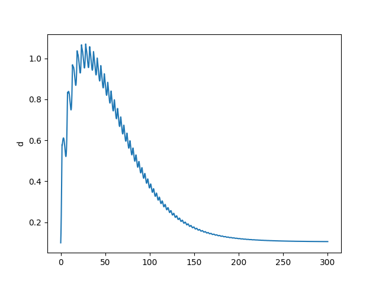
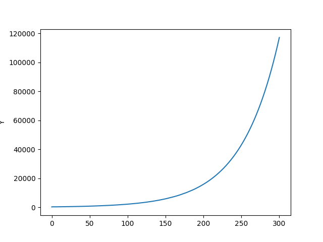
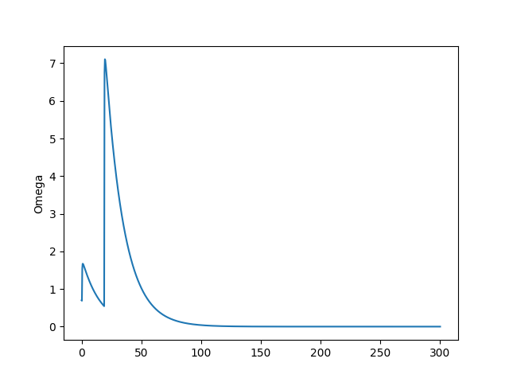
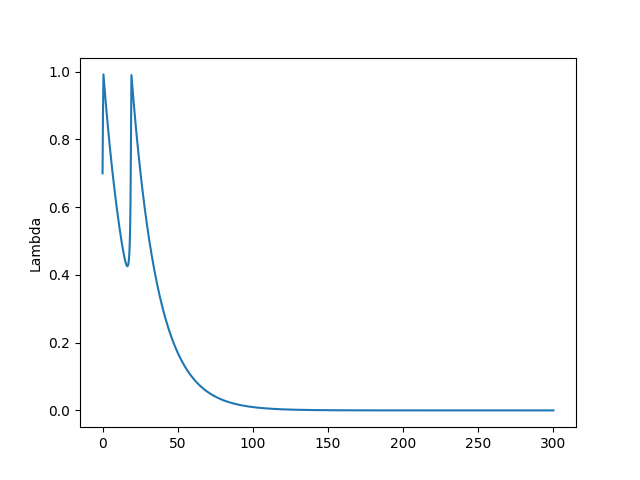
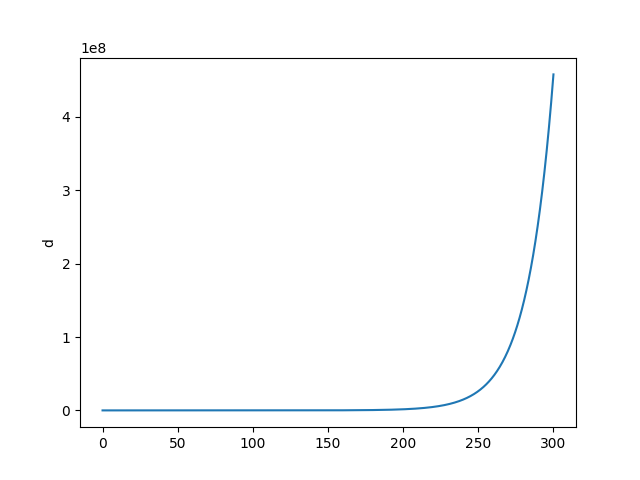
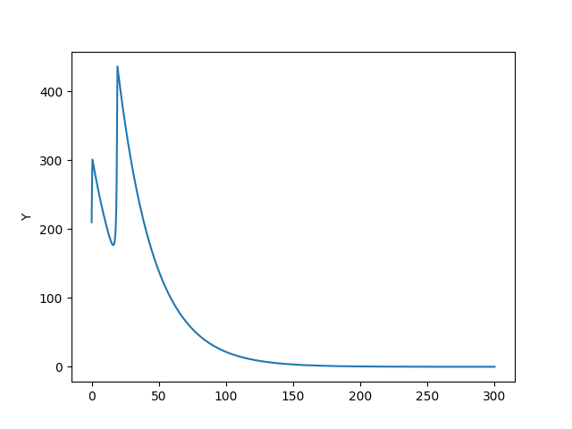

Steve Keen Özel Sektör Modeli, İkinci Form
Bu yazıda bir önceki yazıda baktığımız borç temell modeli sıfırdan türetmeye uğraşacağız. Sonuç olarak gayrı-lineer sonuçlar verebilecek bir ODE sistemi elde edeceğiz, bu sistemin, bu ders notlarında pek çok kez gördüğümüz gibi sabit noktaları olacaktır, bu noktalardan ekonomik olarak anlamı olan bir tanesine bakacağız. Ardından sayısal olarak sistemi çözüp iki farklı başlangıç noktasına göre gidişatın neye benzediğini göreceğiz.
Yan tanımlar, bazıları yeni, bazıları önceki yazıdan tekrar,
$\alpha$: üretkenliğin büyüme oranı, $\frac{\mathrm{d} a}{\mathrm{d} t} = \alpha a$
$\beta$: nüfusun büyüme oranı, $\frac{\mathrm{d} N}{\mathrm{d} t} = \beta N$
$w$: İşçi kazanç oranı (kişi başına gelir), tüm maaşlar $W = w \cdot L$. Değişken $w$'ye birim emek için elde edilen gelir ismi de verilebilir.
$L = Y/a$: Ne kadar üretim olduğunu üretkenliğe bölersek istihdam elde ederiz. Ya da tersten bakarsak istihdam seviyesi üretkenlik üzerinden üretimi belirler.
Sermaye $K$ bir hızlandırıcı / sabit $v$ üzerinden üretime $Y$'ye $K = v \cdot Y$ ile bağlı.
$\dot{w} = \Phi(\lambda) \cdot w$: İşçi kazanç oranındaki değişim istihdam oranının gayrı-lineer bir fonksiyonu, çoğunlukla burada Philips eğrisi kullanılır, mesela $\Phi(\lambda) = \frac{\phi_1}{(1-\lambda)^2}-\phi_0$
$\omega$ ekonomideki işçi ücretleri oranı, $\omega=\frac{w\cdot L}{a \cdot L} = \frac{w}{a}$
Kâr $\Pi = (1-\omega-rd)Y$, yani üretimden işçi ücretlerini ve borç geri ödemesini (faiz) çıkartırsak, kalan net kâr.
$\dot{K} = I - \delta K =\kappa(1 - \omega - rd) Y - \delta K$: Yatırım şirketin kârı $1 - \omega - rd$'nin bir gayrı lineer fonksiyonu (çarpı mevcut üretim), daha fazla kârın daha fazla yatırım isteğine sebep olacağını burada modelliyoruz. Sermaye seviyesi degisimine amortisman $\delta K$ da uyguluyoruz. $\kappa(x)$ meselâ $\kappa(x) = \kappa_0 + \kappa_1 \exp(\kappa_2 x)$.
$ \frac{\mathrm{d} D}{\mathrm{d} t} = \dot{D} = I - \Pi$: İstenen yatırım seviyesi ve eldeki kâr arasındaki fark borç miktarı $D$'de artışa sebep olur.
Şimdi alttaki ana tanımları yapalım [1]. Bu tanımlar modelin temelini oluşturacak ve eğer doğru tanımlarsa bizi doğru tahminlere taşıyacaklar.
-
Üretimdeki işçi ücret payı, tüm işçi ücret ödemeleri $W$ bölü gayrı-safi yurtiçi hasıla (GSYH) $Y$'ye eşittir. $\omega = W/Y$.
-
Özel (kişi, şirket) borcun GSMH'ye oranı, borç $D$ bölü GSYH $Y$. $d=D/Y$.
-
İstihdam oranı iş sahibi olan kişi sayısı $L$ bölü tüm nüfus $N$'ye eşittir. $\lambda = L/N$.
Şimdi üstteki üç tanımın zamana göre türevini alalım. Bu tanımlar doğru olduğuna göre (biz tanımladık) onların dinamik hali de doğru olmalıdır. Log türev alma tekniğini kullanacağız yine,
- Eğer ücret artışları işçi verimlilik artışından büyük ise üretimdeki işçi ücret payı büyür. Yani
$$ \frac{\dot{\omega}}{\omega} = \frac{\dot{W}}{W} - \frac{\dot{Y}}{Y} $$
- Eğer borç oranı ekonomik büyüme oranından daha hızlı büyüyorsa özel borcun GSYH'ye oranı artar. Yani,
$$ \frac{\dot{d}}{d} = \frac{\dot{D}}{D} - \frac{\dot{Y}}{Y} $$
- Eğer gerçek (enflasyon düzeltilmesi yapılmış) ekonomik büyüme (yüzde), nüfus artış oranı + işçi verimlilik artış oranını geçiyorsa, istihdam oranı (yüzdesi) artar (alttaki başlangıç, türetimin gittiği nokta tanımla uyuyor, altta görülecek).
$$ \frac{\dot{\lambda}}{\lambda} = \frac{\dot{L}}{L} - \frac{\dot{N}}{N} $$
Şimdi bu türevleri kullanarak bir ODE sistemine ulaşmaya uğraşalım [2].
- tanımı alalım ve açalım,
$$ = \frac{\dot{w}}{w} + \frac{\dot{L}}{L} - \frac{\dot{Y}}{Y} $$
$$ = \frac{\dot{w}}{w} + \frac{\dot{L}}{L} - \frac{\dot{L}}{L} - \alpha $$
$$ \frac{\dot{\omega}}{\omega} = \frac{\dot{w}}{w} - \alpha = \Phi(\lambda)-\alpha$$
- tanımı açalım,
$$ \dot{D} = I - \Pi = \kappa(1 - \omega - rd) Y - (1-\omega-rd)Y $$
Hatırlarsak $D/Y = d$, yani $D = Yd$, $\dot{D}/D$ için $D=Yd$ ile böleriz,
$$ \frac{\dot{D}}{D} = \frac{ \kappa(1 - \omega - rd)}{d} - \frac{(1-\omega-rd)}{d} $$
$$ = \frac{ \kappa(1 - \omega - rd) - (1-\omega-rd) }{d} $$
Şimdi $\dot{Y}/Y$ hesabı yapalım, $\dot{Y}/Y = \dot{K}/K$ olduğu için,
$$ \dot{Y}/Y = \dot{K}/K = \frac{\kappa(1 - \omega - rd) Y - \delta K}{K} $$
$$ = \frac{\kappa(1 - \omega - rd) }{v}- \delta \qquad (1) $$
O zaman
$$
\frac{\dot{D}}{D} - \frac{\dot{Y}}{Y} =
\frac{ \kappa(1 - \omega - rd) - (1-\omega-rd) }{d}
- \frac{\kappa(1 - \omega - rd) }{v} + \delta
$$
- tanımı açalım,
$$ = \frac{\dot{L}}{L} - \frac{\dot{a}}{a} = \frac{\dot{L}}{L} - \beta $$
$$ Y = L \cdot a $$
$$ \frac{\dot{Y}}{Y} = \frac{\dot{L}}{L} + \frac{\dot{a}}{a} = \frac{\dot{L}}{L} + \alpha $$
$$ \frac{\dot{\lambda}}{\lambda} = \frac{\dot{Y}}{Y} - \alpha - \beta $$
Biraz önce (1)'de bulduğumuz $\dot{Y}/Y$ sonucunu kullanalım,
$$ \frac{\dot{\lambda}}{\lambda} = \frac{\kappa(1-\omega-rd)}{v} - \alpha - \beta - \delta $$
Sonuç olarak şu ODE denklem sistemine erişiyoruz,
$$ \dot{\omega} = \omega [ \Phi(\lambda)-\alpha ] \qquad (2) $$
$$ \dot{\lambda}= \lambda \bigg[ \frac{\kappa(1-\omega-rd)}{v} - \alpha - \beta - \delta \bigg] \qquad (3) $$
$$ \dot{d} = d \bigg[ r - \frac{\kappa(1-\omega-rd)}{v} + \alpha \bigg] + \kappa(1-\omega-rd) - (1-\omega) \qquad (4) $$
Stabil Noktalar
Birazdan yapılacak hesaplar için gerekli bazı sabitleri tanımlayalım,
alpha = 0.025
beta = 0.02
delta = 0.01
v = 3.0
k0 = -0.0065
k1 = np.exp(-5.0)
k2 = 20.0
r = 0.03
phi0 = 0.04 / (1.0-(0.04**2))
phi1 = 0.04**3.0 / (1.0-(0.04**2))
def kappa(x,k0,k1,k2): return k0 + (k1*np.exp(k2*x))
def philips(lam,phi0,phi1): return ( (phi1 / (1.0-lam)**2) - phi0)
ODE sistemindeki tüm türevlerin sıfır olması için $(0,0,0)$ seçilebilir, fakat bu aşırı basit (trivial) çözümdür, ekonomik olarak anlamı yoktur. Daha anlamlı bir sabit nokta için (2)'deki türevin sıfır olması için $\Phi(\lambda)=\alpha $ olmalıdır, ya da $\lambda=\Phi^{-1}(\alpha)$. Yani bir $\Phi$'nin tersini arıyoruz, öyle ki $\Phi^{-1}(\Phi(\lambda)) = \lambda$ olsun. $\Phi$ neydi?
$$ \Phi(\lambda) = \alpha = \frac{\phi_1}{(1-\lambda)^2}-\phi_0$$
Fonksiyonun tersini bulmak için bir karesel denklem şeklinde düzenleyelim,
$$ \alpha + \phi_0 = \frac{\phi_1}{(1-\lambda)^2}$$
$$ (1-\lambda)^2 = \frac{\phi_1}{ \alpha + \phi_0} $$
$$ \lambda^2 - 2\lambda + 1 - \frac{\phi_1}{ \alpha + \phi_0} =0$$
Bu standart bir karesel denklem, köklerini bulalım,
res = np.roots([1, -2, 1-(phi1/(alpha+phi0)) ])
lambda1 = res[1]
print res
[ 1.03138824 0.96861176]
$\lambda < 1.0$ olması gerektiği için aradığımız ikinci sonuç, yani [2]'de bahsedilen $\overline{\lambda}_1 = 0.9686$ değeri.
(3) denkleminde türevi sıfıra eşitleriz ve basit olmayan çözüm için
$$ \kappa(1-\omega-rd)= v (\alpha + \beta + \delta) \qquad (5) $$
ile başlarız. Yine ters alma operasyonu uygularsak,
$$ \overline{\pi}_1 = 1-\omega-rd= \kappa^{-1}(v (\alpha - \beta - \delta)) $$
$\overline{\pi}_1$ tanımını yaptık takibi rahat olsun diye.
Önce $\overline{\pi}_1$ hesabı. $\kappa$'nin tersi lazım,
$$ \kappa^{-1} = \frac{1}{\kappa_2} \log \bigg( \frac{\kappa(x) - \kappa_0 }{\kappa_1}\bigg)$$
tmp = v*(alpha+beta+delta) - k0
pi1 = 1.0/k2 * np.log(np.abs(tmp/k1))
print 'pi1', pi1
pi1 0.161841399381
$\overline{\omega}_1$ için (5)'i tekrar düzenleyelim,
$$ d = \frac{1-\overline{\pi}_1-\omega}{r} $$
Şimdi bu $d$'yi (4) içine sokalım,
$$ 0 = \frac{1-\overline{\pi}_1-\omega}{r} \bigg[ r - \frac{v (\alpha + \beta + \delta)}{v} + \delta \bigg] + v (\alpha + \beta + \delta)- 1+\omega $$
$$ -\omega = \bigg(\frac{1}{r}-\frac{\overline{\pi}_1}{r}-\frac{\omega}{r}\bigg) \bigg( r - \alpha - \beta \bigg) + v (\alpha + \beta + \delta)- 1 $$
$$ -\omega = \bigg(\frac{1}{r}-\frac{\overline{\pi}_1}{r}-\frac{\omega}{r}\bigg)c_1 + c_2 - 1 $$
$$ -\omega = \frac{c_1}{r}-\frac{c_1\overline{\pi}_1}{r}-\frac{c_1 \omega}{r} +c_2 - 1 $$
$$ \omega(\frac{c_1 }{r} -1) = \frac{c_1}{r}-\frac{c_1 \overline{\pi}_1}{r} +c_2 - 1 $$
$$ \omega(\frac{c_1-r }{r}) = \frac{c_1 - c_1 \overline{\pi}_1 + rc_2 - r}{r} $$
$$ \overline{\omega}_1 = \frac{c_1 - c_1\overline{\pi}_1 + rc_2 - r}{c_1 - r} $$
c1 = r-alpha-beta
c2 = v*(alpha+beta+delta)
omega1 = (c1 - c1*pi1+r*c2-r) / (c1-r)
print omega1
0.836052866873
$d$ için $\overline{\pi}_1 $ formülünden başlarız, ve artık bildiğimiz değerleri yerine koyarız
$$ \overline{\pi}_1 = 1-\omega-rd => d = (1-\overline{\omega}_1 -\overline{\pi}_1) / r $$
d1 = (1-omega1-pi1) / r
print d1
0.0701911248667
fp1 = (lambda1,omega1,d1)
print 'sabit nokta', np.round(fp1,4)
sabit nokta [ 0.9686 0.8361 0.0702]
Bu değerler istihdam, işçi ücretlerinin GSYH içindeki payı, ve özel borç oranının sabit noktadaki değerlerini gösteriyor. Bu değerleri verilen parametreler ışığında ekonomik olarak "optimal" olarak görebiliriz. [2]'de bu değerlerin stabilite ne kadar yakınında kalınması gerektiği gösterilmiş.
Şimdi ODE sistemini sayısal olarak çözelim,
import scipy as sp
from scipy.integrate.odepack import odeint
def rhs(u,t,alpha,beta,delta,r,k0,k1,k2,v,phi0,phi1):
omega, lam, d, a, N = u
tmp = kappa(1.0-omega-r*d,k0,k1,k2)
res = [omega*(philips(lam,phi0,phi1)-alpha), \
lam*(tmp/v - alpha - beta - delta), \
d * ( r - tmp/v + alpha ) + tmp - (1.0-omega), \
alpha*a, \
beta*N]
return res
İki senaryoyu deneyelim, biri üstte bulduğumuz sabit noktaya yakın bir yerden, diğeri uzak bir yerden başlamak.
omega0 = 0.80
lam0 = 0.80
d0 = 0.1
a0 = 0.5
N0 = 300.
t=np.linspace(0.0,300.0,10000.0)
args = (alpha,beta,delta,r,k0,k1,k2,v,phi0,phi1)
res=odeint(rhs,[omega0, lam0, d0, a0, N0],t,args=args)
omega1, lam1, d1, a1, N1=res[:, 0],res[:, 1],res[:, 2],res[:, 3],res[:, 4]
Y = lam1*N1
plt.figure()
plt.plot(t,omega1)
plt.ylabel('Omega')
plt.savefig('chaos_app03_01.png')
plt.figure()
plt.plot(t,lam1)
plt.ylabel('Lambda')
plt.savefig('chaos_app03_02.png')
plt.figure()
plt.plot(t,d1)
plt.ylabel('d')
plt.savefig('chaos_app03_03.png')
plt.figure()
plt.plot(t,Y)
plt.ylabel('Y')
plt.savefig('chaos_app03_04.png')
   
omega0 = 0.70
lam0 = 0.70
d0 = 0.1
a0 = 0.5
N0 = 300.
t=np.linspace(0.0,300.0,1000.0)
args = (alpha,beta,delta,r,k0,k1,k2,v,phi0,phi1)
res=odeint(rhs,[omega0, lam0, d0, a0, N0],t,args=args)
omega2, lam2, d2, a2, N2=res[:, 0],res[:, 1],res[:, 2],res[:, 3],res[:, 4]
Y = lam2*N2
plt.figure()
plt.plot(t,omega2)
plt.ylabel('Omega')
plt.savefig('chaos_app03_05.png')
plt.figure()
plt.plot(t,lam2)
plt.ylabel('Lambda')
plt.savefig('chaos_app03_06.png')
plt.figure()
plt.plot(t,d2)
plt.ylabel('d')
plt.savefig('chaos_app03_07.png')
plt.figure()
plt.plot(t,Y)
plt.ylabel('Y')
plt.savefig('chaos_app03_08.png')
   
Görüldüğü gibi ilk senaro bizi stabiliteye taşıyor, diğeri ekonomik çöküşe. Çöküş noktasında işsizlik, üretim sıfır, özel borç sonsuz seviyede. Bu çöküşe gidişin ne kadar kolay olduğunu gördük, sabit noktadan çok fazla uzaklaşmadık, ama sistem batışa gitti. Eğer modelin ana temeline inanıyorsak söylediklerine de inanmak gerekir, serbest piyasa kurulduğu şekliyle temel olarak krizlere açıktır. Bunu zaten gerçek dünyada da görüyoruz, her 10 senede bir ekonomide kriz oluyor.
Sabit noktanın ne anlama geldiğini sözel olarak belirtmek gerekirse, [0.9686 0.8361 0.0702] demek istihdam oranı 96\%, gelir dağılımındaki maaşların (yani orta sınıfın kazandığı, çünkü onlar gelirlerini maaştan elde ediyorlar) payı 83\%, borç oranının 7\% olması demektir ($v$ sabitini arttırınca borçluluk oranı daha fazla olabiliyor, fakat diğerlerinde pek değişim yok). O zaman krizleri azaltmak demek istihdam teşviki, ve kazançların artması, borçluğun azalması demektir. Şu anda Amerika'da seviyeler alttadır,
import pandas as pd
df = pd.read_csv('gdp.csv',parse_dates=True)
df.columns = ['date','W','GDP','house_debt','corp_debt','N','emp']
df = df.dropna()
df = df.set_index('date')
df.loc[:,'N'] = df['N'] / 1000000.
df.loc[:,'W'] = df['W'] / 1000.
df.loc[:,'GDP'] = df['GDP'] / 1000.
df.loc[:,'corp_debt'] = df['corp_debt'] / 1000000.
df.loc[:,'house_debt'] = df['house_debt'] / 1000.
df['wage_share'] = df.W / df.GDP
df['debt_share'] = (df.corp_debt + df.house_debt) / df.GDP
print df[['emp','wage_share','debt_share']].tail(1)
emp wage_share debt_share
date
2016-01-01 81.2 0.441951 1.089282
Gelir seviyesi olması gerekenin yarısında, borçluluk çok yüksek, istihdam düşük.
Kaynaklar
[1] Keen, On Macroeconomic modelling, http://www.profstevekeen.com/crisis/models
[2] Grasselli, An analysis of the Keen model for credit expansion, asset price bubbles and financial fragility,https://ms.mcmaster.ca/~grasselli/GrasselliCostaLima_MAFE_online.pdf
Yukarı